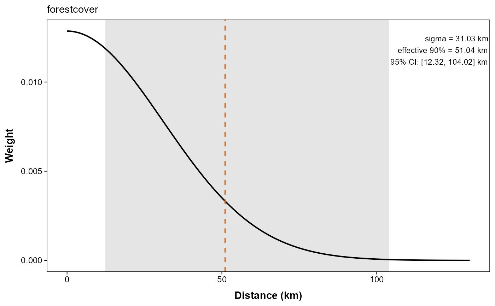

Log-linear conductance model with estimated Gaussian smoothing scales
Source:R/gaussian_scale_conductance.R
gaussian_smoothed_loglinear_conductance.RdCreates a conductance-model factory that smooths selected raster layers with a native Gaussian FFT operator and treats the corresponding Gaussian scale parameters as part of the optimized conductance parameter vector.
Usage
gaussian_smoothed_loglinear_conductance(
surface,
scale_vars = NULL,
standardize = TRUE,
sigma_lower = NULL,
sigma_upper = NULL,
sigma_conversion = c("cell", "map"),
sigma_conversion_factor = NULL
)Arguments
- surface
A
conductance_surfaceobject created withsaveStack = TRUE. The retained raster stack is used as the native smoothing domain during optimization.- scale_vars
Optional character vector naming the raster layers whose Gaussian smoothing scales should be estimated. Defaults to all numeric raster variables present in the model formula.
- standardize
Should each smoothed layer be centered and scaled across the active graph cells at every parameter evaluation? Default
TRUE. This is separate fromscale_covariates: the raw raster is smoothed first, then the smoothed active-cell values are standardized internally.- sigma_lower, sigma_upper
Optional lower and upper bounds for the Gaussian scale parameters on their natural distance scale. Scalar values are recycled across all scaled rasters; named vectors may be used to set different bounds by raster name. When omitted,
sigma_lowerdefaults to half of the mean raster cell width andsigma_upperdefaults to one sixth of the smaller raster dimension in cells times the mean cell width. The Gaussian kernel uses a raster-sized window; larger explicit upper bounds issue a warning because more of the kernel is truncated.- sigma_conversion
Internal scaling applied during optimization.
"cell"(default) rescales each sigma parameter by the mean cell width of its raster layer so optimization happens in approximate cell units, while reported coefficients are converted back to map units."map"leaves the optimization on the native map-unit scale.- sigma_conversion_factor
Optional positive scalar or named vector used to override the default sigma conversion factors. This is most useful when you want optimization to happen in user-defined distance units while still reporting fitted sigma values in map units.
Value
A function of class terradish_conductance_model_factory that
can be supplied as the conductance_model= argument to
terradish.
Details
This is a scale-aware extension of loglinear_conductance.
Factory settings are evaluated when the factory is created, so factories
constructed in a loop retain their own raster choices and scale bounds.
Given a model formula such as
~ altitude * forestcover + I(altitude^2), the fitted parameter vector
contains both conductance coefficients and one natural-scale sigma
parameter for each scaled raster layer. The spatial kernel is Gaussian and is
evaluated with an FFT-based normalized convolution over the retained raster
stack from surface. The smoothing domain is fixed within each graph
evaluation, which keeps the sigma derivatives smooth during optimization.
When terradish is run with
approximation = "coarse_raster", the smoother is rebuilt on each
coarse graph while preserving the full-resolution sigma bounds and
conversion so coarse-stage starts remain interpretable in map units.
Internally, the sigma parameters may be optimized on a converted scale
(for example, approximate cell widths) and are then converted back to map
units before they are returned to users.
These parameters describe Gaussian smoothing of the supplied raster in its
map units. They are not direct estimates of dispersal distance, movement
distance, home-range size, or the scale of a causal ecological process.
Unlike the standard fixed-raster workflow, pre-scaling with
scale_covariates is unnecessary when
standardize = TRUE: the supplied raster is smoothed at each proposed
sigma, then its active-cell values are centered and scaled. Because
scale_covariates applies a positive affine transformation to each
layer, pre-scaling gives the same standardized smoothed values up to
numerical tolerance. Supplying original values keeps the preprocessing and
coefficient interpretation clear. With standardize = FALSE,
pre-scaling changes the covariate and coefficient units.
With the default standardization, a coefficient is relative log conductance
per standard deviation of the smoothed layer at the current sigma. The
layer is re-standardized at every candidate sigma during fitting. The
half-cell lower bound still smooths; near the upper bound, the smoothed
layer acts as a broad spatial trend. Dispersal averaging can favor a positive
sigma even when no separate ecological scale of effect exists.
The Gaussian kernel is truncated to a raster-sized window. The default
upper bound keeps approximately three sigma inside half the smaller raster
dimension; increasing it cannot recover kernel mass outside that window.
Inspect summary(fit)$sigma_table for bound flags and
gaussian_scale_profile for profile intervals. Scale estimates
do not receive z or p values because zero is outside the fitting interval.
Wald intervals are truncated at the bounds; a bound-limited interval does
not demonstrate a precisely identified scale.
The current implementation supports numeric raster formulas built from raw
raster names, interactions, and polynomial/arithmetic terms that can be
differentiated analytically by D after smoothing the base
raster layers. Factor-valued raster layers are rejected because Gaussian
smoothing is only defined here for numeric rasters; use an unscaled fixed
conductance model if you need categorical raster predictors.
For this conductance model, terradish always selects
optimizer = "bfgs" when optimizer = "auto", whatever the
number of parameters, and leverage /
partial_X calculations are currently disabled because the current
leverage machinery assumes a one-to-one mapping between fitted conductance
parameters and design-matrix covariates, which does not hold once separate
Gaussian sigma parameters are introduced.
Worked example
See vignette("v07-gaussian-scale-optimization", package = "terradish")
for fitting, plotting, and interpreting smoothing scales on the pond landscape.
See also
gaussian_scale_summary and
gaussian_scale_profile to read the fitted scales,
terradish_scale_optim for an outer search with other
kernels, loglinear_conductance
Other conductance models:
loglinear_conductance(),
smooth_loglinear_conductance(),
terradish_conductance_model_factory
Other spatial scale:
gaussian_scale_profile(),
gaussian_scale_summary(),
terradish_scale_optim()
Examples
# \donttest{
data(melip)
forestcover <- terra::unwrap(melip.forestcover)
coords <- terra::unwrap(melip.coords)
# Name the layer, but do not scale it: the Gaussian model smooths the raw
# raster first and then standardizes internally.
names(forestcover) <- "forestcover"
# Coarsened so the example runs quickly: the raster is re-smoothed at every
# candidate sigma. Use the full resolution in a real analysis.
forestcover <- terra::aggregate(forestcover, fact = 3, na.rm = TRUE)
# Keep one site per raster cell (some melip sites share a cell). The
# cells of a twice-coarser grid are used so that the coarse-raster warm
# start below also has one site per cell.
coarse <- terra::aggregate(forestcover, fact = 2, na.rm = TRUE)
keep <- !duplicated(terra::cellFromXY(coarse, terra::crds(coords)))
Fst <- melip.Fst[keep, keep]
surface <- conductance_surface(forestcover, coords[keep], saveStack = TRUE)
gaussian_model <- gaussian_smoothed_loglinear_conductance(surface)
fit <- terradish(
Fst ~ forestcover,
data = surface,
conductance_model = gaussian_model,
measurement_model = mlpe,
optimizer = "auto"
)
# coef() holds the log-conductance coefficient (per SD of the smoothed
# layer) and sigma.forestcover, the smoothing scale in map units (degrees
# for these unprojected rasters).
coef(fit)
#> forestcover sigma.forestcover
#> 0.3276100 0.2795342
# Roughly 111 km per degree near the equator converts the scale to km.
gaussian_scale_summary(fit, distance_per_map_unit = 111,
distance_unit = "km")
#> covariate sigma sigma_lower sigma_upper sigma_internal sigma_conversion
#> 1 forestcover 0.2795342 0.0675 1.17 2.070624 0.135
#> sigma_conversion_mode native_unit sigma_cells_x sigma_cells_y axis_50
#> 1 cell degrees 2.070624 2.070624 0.188543
#> radial_50 axis_95 radial_95 sigma_km sigma_lower_km sigma_upper_km
#> 1 0.3291264 0.547877 0.684229 31.0283 7.4925 129.87
#> axis_50_km radial_50_km axis_95_km radial_95_km
#> 1 20.92827 36.53303 60.81434 75.94941
plot(fit, type = "sigma", distance_per_map_unit = 111,
distance_unit = "km")

# On a full-resolution raster, a coarse-raster warm start cuts the cost of
# the scale search. With exact_refine = TRUE the reported fit is refined
# back on the original graph, so the estimates stay exact.
fit_coarse <- terradish(
Fst ~ forestcover,
data = surface,
conductance_model = gaussian_model,
measurement_model = mlpe,
approximation = "coarse_raster",
approximation_control = list(factor = 2, exact_refine = TRUE),
optimizer = "auto"
)
# }